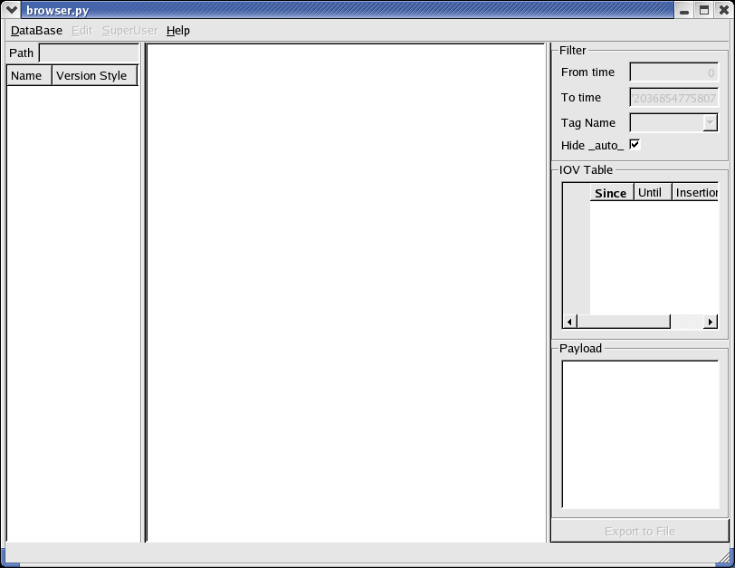
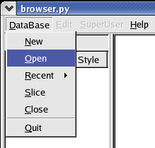
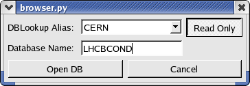
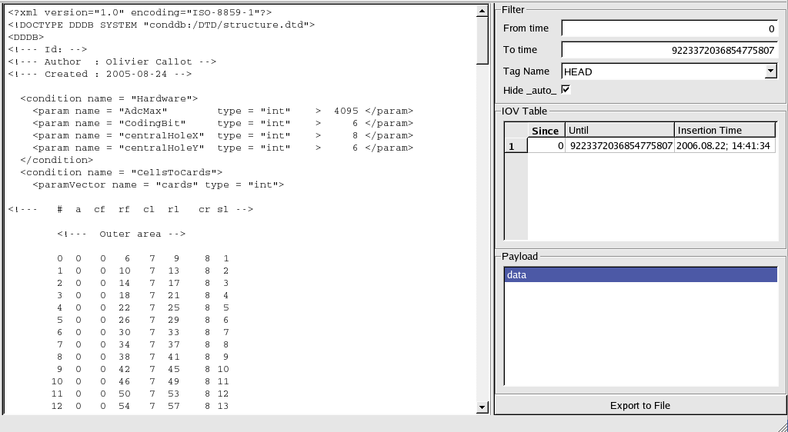

This document presents the Conditions
Database Browser developped for LHCb. It was developped in Python
(version
2.4) and the Qt
library (version 3.3). It is based on the Conditions Database library COOL. This library
allows to use the same interface for various database systems, like Oracle, MySQL or SQLite.
Installation of the
Browser
The CondDB Browser is provided with the CondDBUI package. You can
get it from CVS by typing:
getpack Tools/CondDBUI
and take the lastest version. The browser's script is python/browser.py.
Configuration
Loading libraries
To be able to run the browser (and anything in the CondDBUI
package), you need to import the latest LHCb Environment by typing the
command:
LHCbEnv
and chose the default version. This will allow us to import the
correct LCG libraries. We actually need nothing from Gaudi or LHCb
software.
If LHCb Environment was not loaded before downloading the package,
you now need to run cmt's configuration script:
cd cmt
cmt config
source setup.sh (for
sh-like shell, typically bash)
source setup.csh (for
csh-like shell, typically tcsh)
This is setting up all the necessary environment variables to allow
the script to run correctly. As Python is an interpreted language,
there is nothing to compile.
Database connection
files
The two files we are presenting here are only necessary if you need
to connect to remote
databases. If you only use local SQLite files, you don't really need
them and you can skip this paragraph.
To connect to remote condition databases, we need some
authentication procedure. This is provided via the authentication.xml file
which should be stored in a safe place (default is $HOME/private. It can be
changed in the cmt/requirement file) as
it may contain passwords in clear text. Below is an example of the
structure of this file:
<?xml version="1.0" ?>
<connectionlist>
<connection
name="oracle://an_oracle_server/schema">
<parameter name="user"
value="username" />
<parameter
name="password" value="THE_PASSWD" />
</connection>
<connection
name="oracle://another_oracle_server/schema">
<parameter name="user"
value="username" />
<parameter
name="password" value="THE_PASSWD" />
</connection>
<connection
name="mysql://a_mysql_server/schema">
<parameter name="user"
value="username" />
<parameter
name="password" value="THE_PASSWD" />
</connection>
</connectionlist>
To connect to a Condition Database, you have to provide a
connection string which allows the program to retrieve connection
details from the authentication.xml
file. However, a simplification is
provided: you can define aliases in the dblookup.xml file, which
is located in the cmt directory
by default. Here is an example:
<?xml version="1.0" ?>
<servicelist>
<logicalservice name="MasterDB">
<service
name="oracle://an_oracle_server/schema"
accessMode="update" authentication="password" />
</logicalservice>
<logicalservice
name="FirstReplicaDB">
<service
name="oracle://another_oracle_server/schema"
accessMode="update" authentication="password" />
</logicalservice>
<logicalservice
name="MyLocalDB">
<service
name="mysql://a_mysql_server/schema" accessMode="update"
authentication="password" />
</logicalservice>
</servicelist>
Thanks to this file, long and complex connection strings are no
longer needed to use connection details from the authentication file.
The name of the logical service is the only information needed (as long
as the authentication file is provided and contain the relevant
information).
Using the CondDB
Browser
This part of the document is mainly a guided tour through
which
most of the browser's functionalities will be described.
Starting the browser
The CondDB Browser "executable" is actually a Python script. This
means that to run it, you have to type (under assumption that you are
in the cmt directory):
python ../python/browser.py
This will open the main window of the browser:

Navigating the
database
Opening an existing
database
To open a database from the browser, you have to go to the menu
DataBase/Open:

This will display the following dialog window:

The DBLookup Alias box
allows you to choose a database alias as it is
defined in the dblookup.xml file. If
you don't have such file or if it
is empty, it is always possible to choose to open an SQLite file. The
Database Name should be
provided by the user. Unfortunately, there is
no simple way to guess this name and users have to know it to open the
database.
By default, the databases are open in Read Only mode. If you are
working on a remote database, it is anyway unlikely that you will have
read/write access on it. However, if you are working on your own
database, you can open it in Read/Write
mode by simply pressing the
Read Only button.
When you are done, simply press the Open
DB button and wait for the
browser to establish the connection (for remote databases, this can
take some time).
The data tree
The above image is an example of the contents of the data tree,
located on the left of the browser. You can travel through it like in
most file system explorer program. At the top of the tree, you can see
a location bar which displays the path to the selected tree item. You
can edit this path to go quickly to the item you are interested in.
There are three different type of tree items: FolderSet, Folder
and Channel. They are
refering to their eponyms in the CondDB. The
FolderSets look like directories and can contain only Folders and other
FolderSets. The Folders, which look like a file, can only contain
Channels. Finally, the Channels, which look like nothing identifiable,
but are blue, contain no other tree items. Each of these items is
identified by a name (the Channels are identified by a number and the
others by a string). Folders items also have a Version Style
property, telling if the values stored in the CondDB folder can be
tagged ("Multi") or not ("Single"). For efficiency reason, it is not
possible to know the version style without selecting the Folder item
manually.
The data display
Selecting a Folder or a Channel item will modify the contents of the
right side of the main window: the data display. The image below shows
what appears when selecting a Channel:

The data display has two main parts.
The left one displays the contents (in text) of a condition object
stored in the database. The right one offers the possibility to select
the condition object to display. These condition objects are listed in
the IOV Table. If this list is
too long, the Filter allows to
reduce it by selecting a validity range (From time and To time):
There are two ways to create a new database: create it from scratch
or create a copy of an existing one. These two possibilities are
available respectively in the menu DataBase/New
and DataBase/Slice. In
both cases, you can only create a SQLite database.
The creation from scratch is strait forward: in the dialog, you
simply choose a filename and a database name (in capitals), press OK
and start playing: